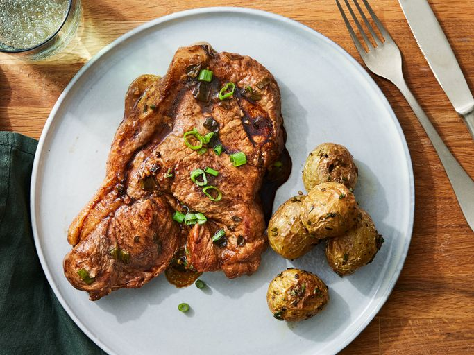

Pork Steak

Homemade one-skillet meal featuring tender pork butt steaks cooked in soy sauce and green onions
Ingredients
- ¼ cup butter
- ¼ cup soy sauce
- 1 bunch green onions, chopped
- 2 cloves garlic, minced
- 6 pork butt steaks
Steps
- Gather all ingredients.
- Melt butter in a large skillet over medium heat; stir in soy sauce
- Add green onions and garlic; cook and stir until lightly browned, about 2 minutes
- Place pork steaks into the skillet. Cover and cook until browned, 8 to 10 minutes per side
- Remove the lid and continue cooking until an instant-read thermometer inserted into the thickest part of
a steak reads 145 degrees F (63 degrees C), about 10 minutes.
- Enjoy!
Home